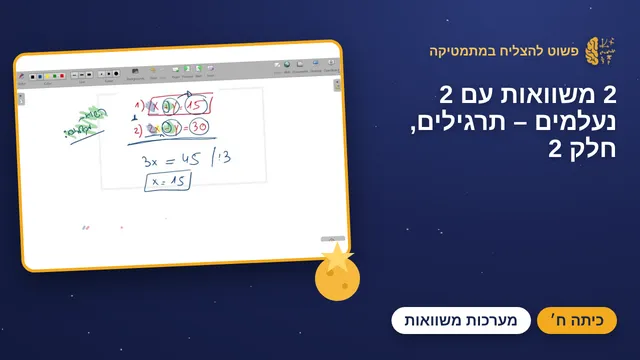
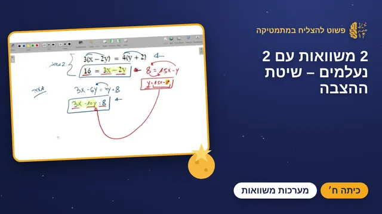
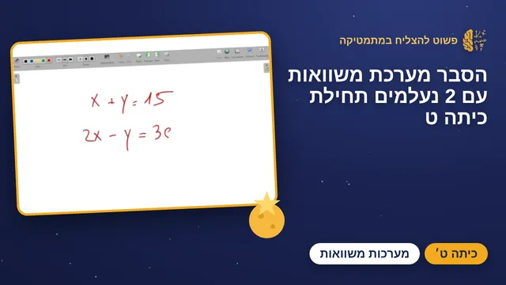

פשוט להצליח במתמטיקה › כל הנושאים › מערכות משוואות
מערכות משוואות – סרטוני הסבר ותרגול
12 סרטוני הסבר ותרגול בנושא מערכות משוואות – לכיתה ח׳, כיתה ט׳, שאלון 371, שאלון 571. כל נושא מוסבר מהקל אל הקשה: קודם הרעיון, אחר כך תרגילים, ובסוף שאלות בסגנון בגרות. הכול בחינם, בשיטת "פשוט להצליח".
רוצים לעקוב אחרי ההתקדמות?נרשמים בחינם, וכל סרטון שראיתם מסומן ✓. ממשיכים מכל מכשיר.
הצטרפות בחינם ←מערכות משוואות – כיתה ח׳ כל הנושאים של כיתה ח׳ ←
 2 משוואות עם 2 נעלמים – תרגילים, חלק 1
2 משוואות עם 2 נעלמים – תרגילים, חלק 1
2 משוואות עם 2 נעלמים – תרגילים, חלק 2 2 משוואות עם 2 נעלמים כיתה ח מדהים ומרגש
2 משוואות עם 2 נעלמים כיתה ח מדהים ומרגש 2 משוואות עם 2 נעלמים כיתה ח
2 משוואות עם 2 נעלמים כיתה ח 2 משוואות עם 2 נעלמים
2 משוואות עם 2 נעלמים תרגילים לדוגמה – 2 משוואות עם 2 נעלמים 1
תרגילים לדוגמה – 2 משוואות עם 2 נעלמים 1 תרגילים לדוגמה – 2 משוואות עם 2 נעלמים 2
תרגילים לדוגמה – 2 משוואות עם 2 נעלמים 2
2 משוואות עם 2 נעלמים – שיטת ההצבהמערכות משוואות – כיתה ט׳ כל הנושאים של כיתה ט׳ ←
 מערכת משוואות עם שברים 30∕x+1=30∕y – הצבה למשוואה ריבועית
מערכת משוואות עם שברים 30∕x+1=30∕y – הצבה למשוואה ריבועית מערכת משוואות עם סוגריים – שיטת ההצבה
מערכת משוואות עם סוגריים – שיטת ההצבה 2 משוואות עם 2 נעלמים 5 יח כיתה ט
2 משוואות עם 2 נעלמים 5 יח כיתה ט
הסבר מערכת משוואות עם 2 נעלמים תחילת כיתה ט